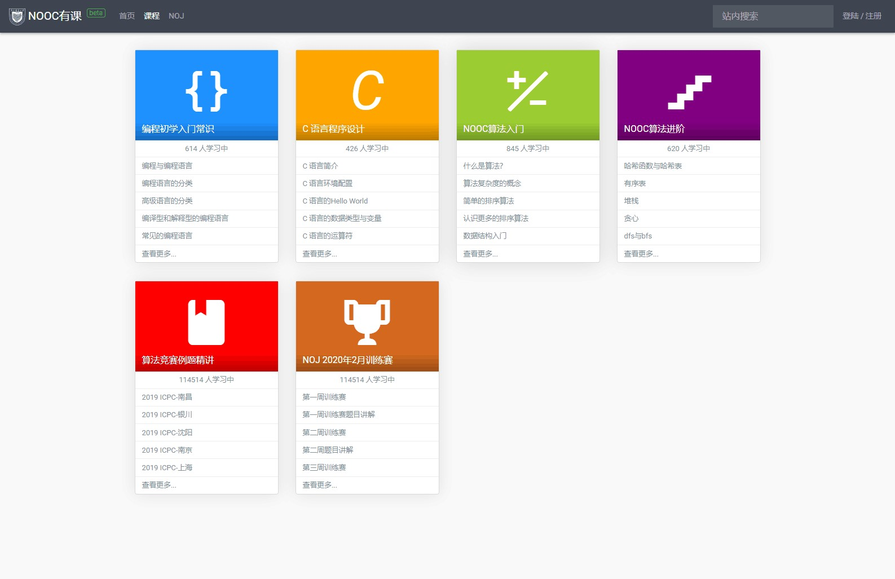
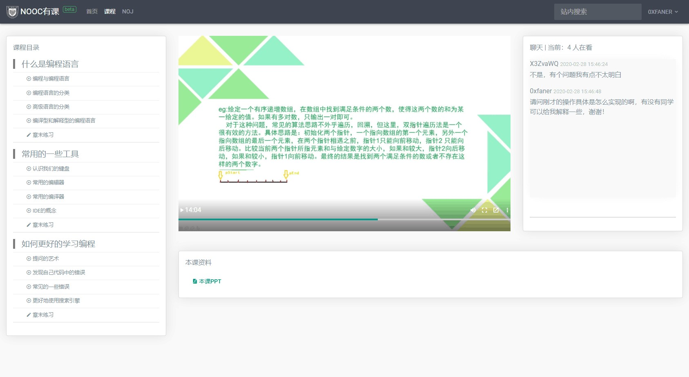
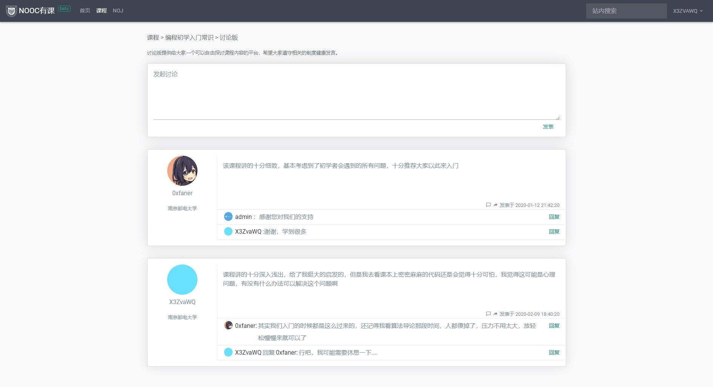

NOOC有课计算机兴趣教学平台
团队于2019年12月在计算机科学教育生态领域推出了“NOOC有课”
NOOC有课是由方糖智行网络科技公司研判国内外同类产品的优缺点并自主研发的计算机领域在线教育系统，提供整个K12阶段计算机科学课程。在系统设计上，团队成员拥有过往教学辅助系统的大量设计经验。目前NOOC有课的公测版本已经吸引了大量初期核心用户，并上线了NOJ月赛讲题与算法知识专题讲座等课程。
NOOC有课是行业领先的创新型增值教育平台，项目计划构建涵盖K12阶段的计算机科学线上教育平台，能为学生提供K12阶段的一条龙教育服务。课程覆盖了基础课程、进阶课程到项目实战等多个学习阶段，充分利用在线教育的优点，实现真正的因材施教，符合《国家中长期教育改革和发展规划纲要》的要求。同时也兼顾了中学的信息学竞赛与大学的各类算法竞赛培训。
-
选课

NOOC有课主讲计算机科学课程与算法竞赛类课程。课程种类繁多，依据不同难度分为不同阶段。用户可以在选课中心中看到该课程的星级评价与开课时间等信息，并通过搜索功能或标签筛选功能自行选择适合自己的课程，也可以根据自己的已学课程来选择对应的进阶课程。选择课程后也可在自己个人的首页看到课程的相关信息。
在选课方面NOOC有课可以从用户的兴趣标签、需求标签、用户行为分析等多个维度，通过漏斗分析模型自动判断用户可能感兴趣的课程并优先推荐。
-
授课
 课程内容版块不仅可以播放事先上传的视频，也支持使用自主研发的授课系统进行互动授课，同时播放课件。在互动授课期间，用户可以向讲师提问，讲师也能和用户进行交流。 直播视频和课件可以长期保存，方便用户反复播放以加深印象，提高学习效果。NOOC有课推出了云笔记功能，支持用户进行在线笔记并进行分享，形成高效的知识共享体系，对于所学知识的重点难点分析起到了极大的作用。
-
社区化
 用户可以在课程的讨论区讨论课程内容或分享学习心得，用户之间可以互相回帖进行交流，讲师也可以参与其中答疑解惑。讨论区支持点赞功能，点赞越多的帖子意味着它质量更高。讲师也可以手动将一些帖子设为精华帖，质量越高的帖子排序顺位越高，用户越容易接触到。讨论区支持帖子按照质量、时间、综合参数等依据进行排序，方面用户们查找。这不仅提升了用户们的参与感，更提高了交流效率，大多数问题都可以在讨论区查阅到，节省了用户们的时间。
-
跟随式教学
NOOC有课推出了创新性的跟随式教学，一步步引导用户进行学习，在不同阶段辅以不同的教学资料。利用NOJ在线测评的云计算优势省去了用户配置环境的时间，上手即可学习。用户学习后可以立即进行项目实战，在实践的过程中不仅可以检验自己的学习成果，更可以增加技能熟练度。 很多线上教育平台的本质仍只是线下课堂的线上化，将讲课视频搬到平台上来播放，没有发挥在线平台的优势所在。视频是一种被动的学习方式，很容易麻痹学习者，让学习者产生自己已经学会的错觉。而跟随式教学采用主动、交互式的学习方式，让学生主动参与学习过程，确保学生真正学会并且熟练运用到学到的知识。计算机科学课程与普通理工科相比更需要实战，单凭视频与课件讲课效率并不高，而在线平台正可以让学生在线上充分实践，充分利用在线教育平台的这一优点，可以让计算机类课程的学习事半功倍。
-
竞赛授课模式
与算法竞赛关联较大的NOOC有课考虑到算法竞赛辅导的特殊性，推出了竞赛授课模式。在竞赛授课模式中，讲师可以在NOJ举办同步比赛，同步比赛支持赛后补题。方便用户及时补足短板。同步比赛提供了完善的分析系统，支持用户查看自己提交的代码的运行时间以及占用的空间等信息。并显示具体代码评测状态，帮助用户了解代码的优缺点。